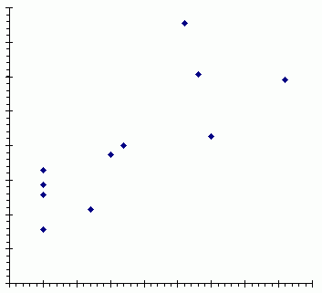
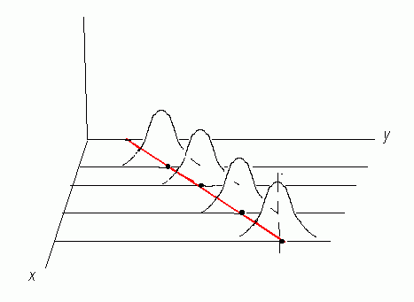

Linear Regression
You should already have a good understanding of basic statistical
concepts, such as characterizing a univariate data set by its mean
and standard deviation and variance, before reading further.
After reading this, you can also proceed to the discussion of
characterizing bivariate data sets (where both x and y
data sets vary) using the correlation
model.
Basic Concepts
Suppose that one particular parameter is understood to depend
on another particular parameter. In medicine, of which there are
many examples like these, suppose that the build up of hard plaque
substance on the inside of the aorta (also called “hardening”)
is related to the long-term consumption of a diet high in saturated
fats. Mathematically, an expression can be created where a
dependent variable, a reasonable measure of the build up
of plaque in the aorta, is related to, or equated to, an
independent variable.

Suppose a plot of all the data is
done, with the dependent variable plotted on the ordinate or vertical,
that is, y axis, and the independent variable plotted
on the abscissa or horizontal, that is, x axis. The plot
may look something like the one in the figure at the right.
As more data is accumulated an plotted, one begins to observe a pattern
of some kind. If the dependent variable varies directly with
the independent variable, a linear relationship is observable.
According the principles of Cartesian analytical geometry, a line
a two-dimensional coordinate system such as the plot of the data
fits a well-known model equation:
y = a + bx [1]
where the coefficient a is the value of y when
x has the value
of zero (this is usually called the “y intercept” as it is
the point on the line where it “intercepts” the y axis),
and b is the relationship for how y changes with x, or
Δy/Δx (usually called the “slope”
of the line).
In statistics, data which can be described in a linear fashion also
uses this equation, with a modificiation:
yi = β0 + β1xi +
ξi [2]
β0 and β1 are the same as a and
b, respectively, in [1], and statisticians may refer to
β0 as the regression constant and
β1 as the regression coefficient.
ξi is a random error term associated with
each point.
Simple Linear Regression
The equations above show that a certain parameter, a dependent variable,
depends upon only one other parameter, an independent variable.
It is possible that a single parameter can depend on more than one
parameter, that is, a dependent variable related to multiple independent
variables. One can use the techniques of multiple
regression to examine the nature of that kind of relationship.
But when there is only one variable that influences the matter (or can
be assumed to do so), one uses simple linear regression to
understand the nature of the influence.
Before using simple linear regression, there is a checklist of assumptions
that need to be met if the use of this technique is to have any value
in analyzing the data set:
- The scale by which any of the variables are measured must be
such that a regression analysis can describe the data properly. For
data measured on a continuous scale of real or integer numbers, this is
usually no problem. Most measurements of natural phenomenon are amenable
to such scaling, but even approaches such as transformations or
assigning numerical values to nominal categories can make data amenable
to regression analysis.
- The variable that has been called “independent” (the
xi variable) up to this point may consist of
values which have been chosen randomly or in a pre-determined way.
Take the example above. When the people are selected for participation
in the aorta hardening-diet study, both the extent of the aortic plaque
deposition or formation and the amount of saturated fat in the diet are
unknown and must be measured. Alternatively, a medical researcher may
want to limit selection of patients to those with a pre-determined
amount of dietary saturated fat, such as 5%, 15%, 25%, and 35% by weight
of fat to total food consumed.
-
The independent variable, x, must be measured without any
associated error. In truth, many measurements of the independent
variable are not made without error, and there are technqiues that
make the analysis more complicated but which can propagate the error
in the final report. For practical purposes, it is reasonable to
assume that the error in the independent variable is negligible
and does not invalidate any analysis in the assumption.
- The dependent variable (y) must be entirely random, and not
pre-determined. That is, it would be inappropriate for the researcher
to exclude certain data, especially if it is to fit a bias. (That is
not to say that no collected data is excludable, but it must be for
other factors than the expectations of what the dependent variable
is to show.)
-

The dependent variable y for each value at x is
part of a normally distributed set of y values at each
value x. Because they are normally
distributed, a mean value and standard deviation can be determined.
In the regression analysis, the mean value will become the
predicted y value upon which the fitted line will pass.
The figure at the right shows a set of normally distributed values
of the dependent variable for each measure of the independent variables,
and the red line passes through the mean of the subpopulation of y
values at each point x
-
To make inferences about the data, the variances for the set of
y values at each value x must be (approximately) equal
(note that this is also a requirement for group variances in ANOVA).
Least squares analysis
There are variety of techniques for fitting a line to the data. One
could reasonably do it “by eye” and probably come up with
a good line.
The method most used however is the mathematical approach of estimating
a line that minimizes the differences of all original data y values
from a single y (“predicted”) value that forms a part
of the line. This is the least squares approach. The regression
values for
yr = b0 +
b1xi
are:
Text ends here...this article remains to be completed
The source used for the information presented above:
Wayne W. Daniel, Introductory Statistics with Applications,
Boston: Houghton Mifflin, 1977.